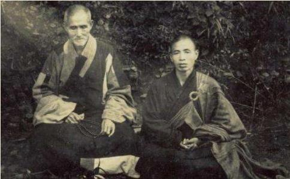

上个世纪的中国，有一位僧人一生历经五帝四朝，主法十五道场，中兴六大祖庭，兼承五宗禅门，被誉为“中国近代
清光绪二十三年（岁次丁酉五十八岁）老和尚往宁波阿育王寺礼
清光绪二十六年（岁次庚子六十二岁）老和尚自从五十一岁到宜兴，礼仁智和尚，修显亲寺（密祖
老和尚行年六十一岁，正逢庚子拳匪之祸，义和团在山东各县时常作乱；老和尚再度朝五台。路经山东遇一洋兵，以枪相向，问：“怕死不？”老和尚答：“倘该死汝手，任便。”洋兵见老和尚神色不动，说：“好的，你去。”老和尚遂赶赴五台，乡人都啧啧称奇。
4.奇祈雨息灾 庚子年五月，义和团的乱，一天厉害一天，以“扶清灭洋”为号召，杀日本使馆书记及德国公使，皇太后暗中纵容，至五月十七日竟下诏向各国宣战，京中大乱；六月天津失守，七月，八国联军陷北京，皇太后和光绪帝向西逃难，时王公大臣有的住在龙泉寺，请老和尚一并西行护驾，在兵荒马乱中，日夜赶程，艰苦万状，行抵达阜平县，才听到甘肃巡抚岑春暄出兵勤王，帝后大喜，出长城，进山西雁门关，那里有一所云门寺，寺内住一老僧年已一百二十四岁，帝赐黄绫及建牌坊。又西行到平阳，遍地饥荒，当地老百姓煮芋叶薯叶给帝后吃，帝后认为味很美。到西安，岑春暄请老和尚在卧龙寺祈祷雨雪息灾，佛事
清光绪二十七年（岁次辛丑六十二岁）隆冬，万山积雪，严寒彻骨，老和尚独居茅蓬中，身心清净，一天煮芋锅中，跏趺坐等待芋熟，不觉入定，到第二年正月，山中邻棚复成师等久不见老和尚的面，乃来茅蓬贺年，见棚外虎迹遍满，无人足迹，进茅蓬见老和尚入定，乃以磬开静。问：“老和尚已吃饭没有？”答：“没有，正在煮芋，大概已经熟了。”打开锅盖一看，霉高寸许。复成师惊讶说：“你一定就是半月了。”相与烹雪煮芋饱食大笑而去。
6.奇雄鸡皈戒 清光绪二十九年（岁次癸卯六十四岁）老和尚在昆明府福兴寺
好斗成性此鸡雄，伤冠拔羽血流红；
知畏奉戒狂心歇，
两目瞻仰黄金相，念佛喔喔何
旋绕三扑奄然化，众生与佛将毋同。
7.奇力移巨石 清光绪三十年（岁次甲辰六十五岁）老和尚出关后，住鸡足山钵盂庵，以便挽救滇中僧众，恢复迦叶道场。那钵盂庵自清嘉庆后就没有人敢住，因为大门外右边有一巨石，白虎不祥。老和尚拟就白虎巨石处凿一放生池，雇工斫之不碎，挖开土方察看，找不到石根。石高九尺四寸，宽七尺六寸，顶平可跏趺坐。招包工议定向左边移远二十八丈，来工人百余名，拼力三天，无法动，工人不顾都散去。老和尚祈祷伽蓝，讽诵
嵯峨怪石挺奇踪，苔藓犹存太古封；
天未补完留待我，云看变化欲从龙；
移山敢笑愚公拙，听法疑曾虎阜逢；
自此八风吹不动，凌霄长伴两三松。
钵盂峰拥梵王宫，金色头陀旧有淙；
访道敢辞来万里，入山今已度千重；
年深岭石痕留藓，月朗池鱼影戏松；
俯瞰九州尘外物，天风吹送数声钟。
8.奇路逢知己 老和尚自力移钵盂庵门前巨石后，已博得大众的